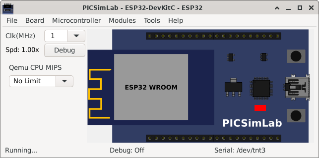
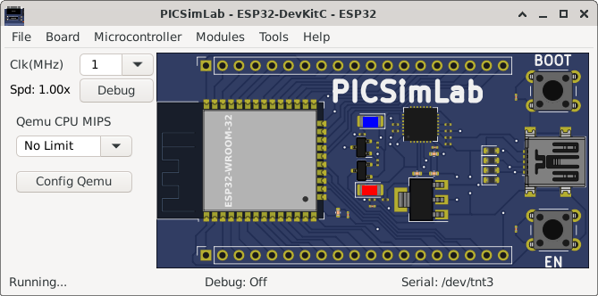

[ESP32/idf_blink] Espressif ESP32 Blink Example/* Blink Example This example code is in the Public Domain (or CC0 licensed, at your option.) Unless required by applicable law or agreed to in writing, this software is distributed on an "AS IS" BASIS, WITHOUT WARRANTIES OR CONDITIONS OF ANY KIND, either express or implied. */ Build instructions and Source code | |
 |
Download (pzw) |
[ESP32/micropython] ESP32 MicropythonOriginal Link: https://micropython.org/Before use this example it is necessary to configure a serial port emulator as described in the documentation. You can load the test code below using a serial terminal or an editor like Thonny or Mu. import machine import time led = machine.Pin(2, machine.Pin.OUT) while True: led.value(1) time.sleep(1) led.value(0) time.sleep(1) | |
|  | Download (pzw) |
[ESP32/NuttX_led] Blink LED no ESP32 com o RTOS NuttXExemplo simples de como piscar um LED utilizando o RTOS Nuttx no ESP32 escrito por Sara Monteiro. | |
 |
Download (pzw) |
[ESP32/SimpleWifiServer] WiFi Web Server LED BlinkA simple web server that lets you blink an LED via the web. This sketch will print the IP address of your WiFi Shield (once connected) to the Serial monitor. From there, you can open that address in a web browser to turn on and off the LED on pin 5. If the IP address of your shield is yourAddress: http://yourAddress/H turns the LED on http://yourAddress/L turns it off This example is written for a network using WPA encryption. For WEP or WPA, change the Wifi.begin() call accordingly. Circuit: * WiFi shield attached * LED attached to pin 5 created for arduino 25 Nov 2012 by Tom Igoe ported for sparkfun esp32 31.01.2017 by Jan Hendrik Berlin On PICSimLab qemu-esp32 simulator the Web server address is mapped in http://localhost:16555 Source code | |
|  | Download (pzw) |
[ESP32/zephyr_esp32_led] Blink LED no ESP32 e Zephyr RTOSExemplo simples de como piscar um LED utilizando o RTOS Zephyr no ESP32 escrito por Glauber Ferreira. | |
 |
Download (pzw) |